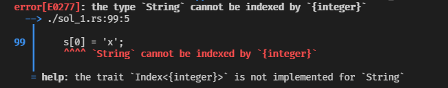
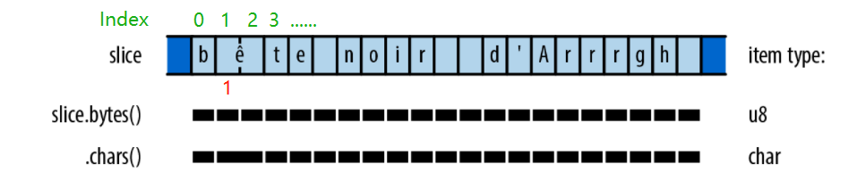
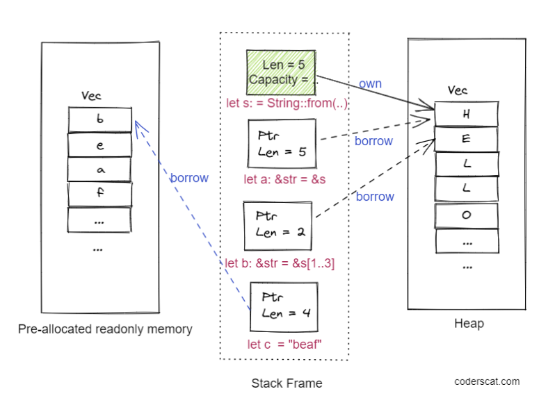
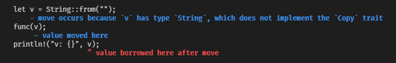

When you begin to learn programming in Rust, your probably first frustration will be the compilation errors from the string.
Rust’s string design is somehow different from most programming languages that have a single string type. Both the Unicode-safe string design and unique ownership mechanism make string in Rust is somehow counterintuitive for beginners.
But, don’t freak out!
Actually, the string data structure is more complicated than most programmers give credit for. And Rust is focused on safety, the compiler will tell you the potential issues about string when you are coding. It’s better to keep safe in development phase, otherwise, you may be lost in debug night.
So, let’s have a bit dive into string in Rust.
What is String
In Rust, String is simply a vector of u8. We can find its definition in source code.
The String type is provided by Rust’s standard library, it is a growable in size and heap-allocated, mutable, string type. When a String variable goes out of scope, the buffer will be freed automatically.
|
We can create a String in several ways:
|
Rust’s character and string types are designed around Unicode. String is not a sequence of ASCII chars, instead, it is a sequence of Unicode characters. A Rust char type is a 32-bit value holding a Unicode code. String use UTF-8 to encode Unicode characters into a vec
|
And .len() method will return the length measured in bytes, not in chars.
|
The most un-natural of string is indexing related operation. For instance, you can not just use s[i] to fetch the i-th individual char from a string. Rust strings don’t support indexing?

Why?
Because UTF-8 is a variable-width encoding format, each ASCII character in a string is stored in one byte, while other characters may take up multiple bytes. So, in this format, index into the string’s bytes will not always correlate to a valid Unicode scalar value.
For a string which contains with ASCII character and non-ASCII character, the s[1] means a invalid value.

Instead, we need to access chars with a iterator.
|
But, if you know your string is all ASCII chars, you may use the non-panicking version of get and get_mut to access or modify a part of string in O(1) time. get_mut will return a &mut str, but it still very restrictive, the only operations available on &mut str are make_ascii_uppercase and make_ascii_lowercase, which modify the text in place and affect only single-byte characters.
|
If you want to more freedom to modify specific bytes in a String, you need to convert it to a mut vec<u8>:
|
Ok, we talked about much about String right now. Just remember, strings in Rust are guaranteed to be valid UTF-8, and get more familiar with String API if you are confused. UTF-8 Everywhere is a best reference for you to learn why Rust choose UTF-8 as encoding format for some good reasons.
What is &str
str, on the other hand, is a primitive type for compiler, it is also called string slice. We usually use it in the borrowed form: &str.
|
Essentially, the compiler treats it as a fat pointer, which means: &str is made up of two components: a pointer to some bytes, and a length.
We can use the method as_ptr() to get pointer and len() to get the length of it.
|
String and &str
The relationship between String and &str is like std::string and char* in C++:
- A Rust
Stringis like astd::string, it owns the memory and does all the dirty job of managing memory. - A Rust
&stris like achar*(but with length), it points us to the beginning of a chunk with the contents ofstd::string.
Why &str need to store the length, this is because we can use use &str to pointer to specific part of a String. Let’s have a example:
|
The corresponding diagram is like this:

String or &str?
There are two principles to follow:
Use
Stringwhen you need to own the memory. For example, you created a string in a function and need to return it.Use
&strwhen you want an immutable reference to a String variable (or a string literal in your code).
Remember, Rust will follow move for String when you passing it as parameter to a function:
|
This program will report out this error message:

This is because v is moved to the function func and we can not read it in the scope of main anymore. The checker follow the rules of Rust ownership. Rust has this super powerful feature called deref coercing which allows it to turn any &String to a &str.
|
So, when you are designing a API which only need to access a string as read-only mode, &str is the best choice.
But when you need to modify the content of a String, you can not pass a &mut str which you may think is reasonable. &mut str does exists, but it is not very useful, because a slice cannot reallocate its referent. When you need to modify the content of a string, you need to pass &mut String as parameter, like the above set_char_inplace example.
In the scenario of struct, in most cases, you need to own the string, so String is almost a better choice compared with &str. If you want to use &str as a attribute in struct, you need to handle the lifetime issue.
|
Other string-like things …
Except for above two kind of strings, Rust also provide other kinds of string-like types for special scenarios. Please check out the reference about them, and here are some general rules we can follow:
- Stick to
Stringand&strfor Unicode text. - When working with filenames, use
std::path::PathBufand &Path instead. - When working with binary data that isn’t UTF-8 encoded at all, use
Vec<u8>and&[u8]instead. - When working with environment variable names and command-line arguments in the native form presented by the operating system, use
OsStringand&OsStr. - When interoperating with C libraries that use null-terminated strings, use
std::ffi::CStringand&CStr.
Join my Email List for more insights, It's Free!😋